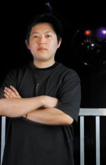

<td width="522" valign="top" background="assets/img/r2_9.gif" class="mein-margine"><div class="column">
		
		<table width="100%"  border="0" cellspacing="1" cellpadding="3">
			<tr>
				<td height="4" class="td-1"></td>
			</tr>
			<tr>
				<td class="td-2"><table width="100%"  border="0" cellspacing="0" cellpadding="2">
						<tr>
							<td valign="top" class="profile-img"></td>
							<td valign="top" class="profile-st"><p><span class="profile-guestname">velocity</span> [7NiNE Productions / zero] </p>
								<p>1997年、ブラックミュージックをきっかけにDJ活動を開始。当初はHIP HOPを軸にし、2002年からドラムンベースへとシフトする。2003年、自身も参加している7NiNE PRODUCTIONSオーガナイズのドラムンベースパーティーZEROの始動に伴い、レジデントDJを務める。VELOCITYのプレイは、フロアのヴァイブをトレースし、ハード、スムース... オーディエンスが求める音をフロアに響かせている。そして、瞬時にフロアを高揚させる独特のスクラッチは、競演したED RUSH &amp; RYMETYMEやCLIPZ &amp; MC TALI等からも評価を得ている。</p>
							</td>
						</tr>
					</table>
				</td>
			</tr>
			<tr>
				<td height="4" class="td-1"></td>
			</tr>
		</table>
		<br>
	</div>
</td>

